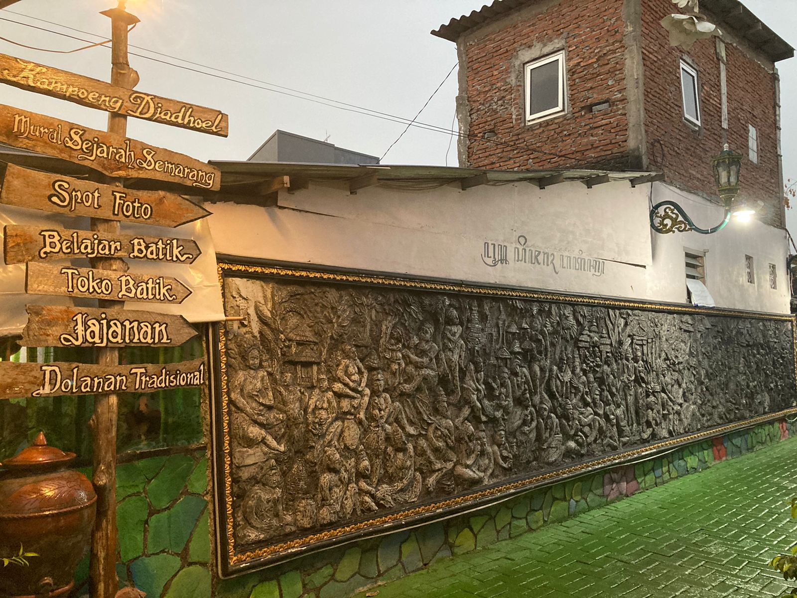

Batik telah menjadi budaya yang sangat menarik untuk dipelajari lebih dalam karena keunikan pembuatan dan motifnya. Berasal dari Indonesia, keeksotisan batik telah diamini oleh warga dunia hingga tanggal 2 Oktober ditetapkan sebagai Hari Batik Internasional. Di Semarang sendiri, terdapat Kampung Batik yang menjadi rumah bagi para pengrajin batik Semarangan dan telah menjadi salah satu kampung tematik kota Semarang sejak tahun 2016. Terletak di Rejomulyo, Bubakan, Kampung Batik tidak terletak jauh dari Kota Lama sehingga bisa menjadi salah satu destinasi yang wajib Anda kunjungi.
Dinding di gang ini digambari dengan cerita sejarah berdirinya kota Semarang dalam bentuk wayang beber. (Astrid SF/Phinemo) Tak banyak yang tahu bahwa Kampung Batik juga memiliki nilai historis dalam kehidupan warga Semarang. Di sini, Anda masih akan menemukan sumur yang digunakan masyarakat Semarang untuk memadamkan daerah Kampung Batik pada kejadian Pertempuran 5 Hari di Semarang. Selain itu, terdapat pula gang yang digambari sejarah berdirinya Semarang dalam bentuk wayang beber. Beber atau dalam bahasa Jawa yang berarti “menjelaskan”, merupakan jenis wayang yang ditampilkan melalui paparan gambar yang telah disiapkan sebelumnya. Maka dari itu, akan lebih seru jika Anda bisa menelusuri warna-warni sejarah Semarang ditemani penduduk setempat yang dengan hati berbagi cerita kepada Anda. Jangan lupa untuk mengambil foto di gang ikonik ini setelah belajar.
Kampung Batik Semarang terasa sangat ramah dengan wisatawan.Lingkungannya yang bersih, membuat para wisatawan yang berkunjung merasakan kenyamanan seperti berada di kampung halaman sendiri. Sejak masuk di Kampung Batik Semarang, Anda disuguhkan mural-mural yang berwarna. Kemudian, terdapat pula spot foto yang menampilkan pahatan-pahatan batu seperti Anda sedang berkunjung ke sebuah candi.
Titik ini menjadi salah satu ikon Kampung Batik dan bisa menjadi tanda bahwa Anda sudah pernah datang ke sentra batik di Semarang ini. Di dekat situ pun terdapat foto-foto yang menggambarkan Semarang tempo doeloe dan pembuatan batik yang sudah ada di zaman dahulu. Pokoknya Anda akan puas untuk mengunggah foto ke media sosial karena banyaknya tempat yang bisa Anda telusuri di kampung ini.